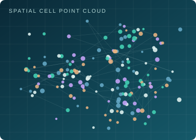

01
SPATIAL PROTEOMICS · TOOL DEVELOPMENT
Building a Topological Toolbox for Spatial Omics
My research at MD Anderson centers on a reusable topological toolbox for spatial proteomics and related spatial omics data. The goal is to examine how different cell populations are arranged in tissue, how cell neighborhoods interact, and how tumor microenvironment organization changes during lung adenocarcinoma progression.
The toolbox develops biologically informed point-cloud and other topological filtrations, persistent-homology summaries, statistical comparisons, robustness checks, and visualizations. It is designed to support interpretable, reproducible comparisons across tissue regions, disease stages, and ultimately additional cancer datasets.
